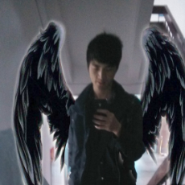

当前位置：
首页
>
个人日记

时间好象一把尺子，它能衡量奋斗者前进的进程。时间如同一架天平，它能称量奋斗者成果的重量；时间就像一把皮鞭，它能鞭策我们追赶人生的目标。时间犹如一面战鼓，它能激励我们加快前进的脚步。
机会无需刻意去把握，越是想抓牢自己的命运，反而容易失去自我，失去自己的方向，生活也会因此而变成毫无美感的形式。 生命就像一捧沙，抓得越紧，流失得越多。
其实美丽的故事都是没有结局的，之因为它没有结局所以才会美丽，这就像为什麽悲剧总是比喜剧更让人难忘，也就像人们总是找寻的真爱，却往往擦肩而去，不是这个时代远离了爱情，而是人们一开始就没有想过用一颗心去坚定的温暖另一颗心，不是爱情不再永恒，而是浮躁和易变的心
人的烦恼就12个字：放不下，想不开，看不透，忘不了。带着简单的心情，看复杂的人生，走坎坷的路。人生，简单就快乐，生活，开心就好！
生活是一件艺术品，每个人都有自己认为最美的一笔，每个人也都有认为不尽如人意的一笔，关键在于您怎样看待。与其整日被庸人自扰的愁闷所困扰，不如以一种顺其自然的态度淡看一切。接受已经发生的事实，是克服随之而来的任何困难的第一步。我们需要的只是一点豁达，让一切都顺其自然吧！
计较的太多就成了一种羁绊，迷失的太久便成了一种痛苦。过多的在乎会减少人生的乐趣，看淡了一切也就多了生命的释然。